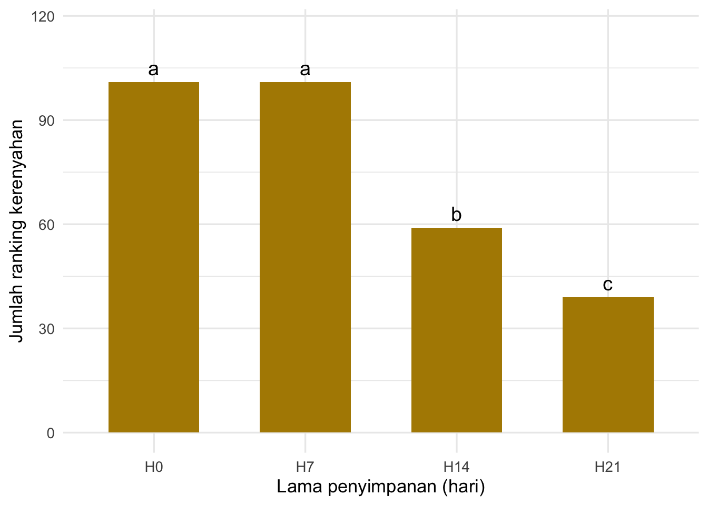

keripik <- read.csv("data/kasus3_ranking_seri_keripik.csv")
head(keripik, 10)Kasus 3 · Ranking dengan Nilai Seri
Ketika panelis tidak bisa membedakan: kerenyahan keripik tempe selama penyimpanan
Cerita kasus
Produsen keripik tempe di Yogyakarta menerima keluhan bahwa keripiknya “melempem” ketika sampai di tangan pembeli luar kota. Tim QC menyimpan keripik dalam kemasan yang biasa dipakai, lalu mengambil sampel pada hari ke-0, 7, 14, dan 21.
| Kode sampel | Lama simpan |
|---|---|
| 174 | 0 hari (segar) |
| 395 | 7 hari |
| 628 | 14 hari |
| 841 | 21 hari |
Tujuan uji: mengetahui sampai hari ke berapa kerenyahan keripik belum berubah menurut konsumen.
Desain uji
- 30 konsumen menerima keempat sampel sekaligus dengan urutan acak dan seimbang.
- Instruksi: “Urutkan sampel berdasarkan kerenyahan. Beri angka 1 untuk yang paling tidak renyah dan 4 untuk yang paling renyah.”
- Berbeda dengan Kasus 2, panelis boleh memberi angka yang sama jika benar-benar tidak bisa membedakan dua sampel, dan menuliskannya di kolom catatan.
- Data dikumpulkan dengan lembar kertas, lalu diketik ulang ke Excel/CSV.
Meilgaard dkk. (Bagian 8.6.4) menyarankan: jika panelis tidak bisa membedakan, berikan ranking rata-rata (midrank). Contohnya, jika dua sampel di posisi tengah dari empat sampel dianggap sama, keduanya diberi ranking (2 + 3)/2 = 2,5.
Langkah 1 — Membaca data
Langkah 2 — Menemukan nilai seri
Jika tidak ada nilai seri, jumlah ranking setiap panelis = 1 + 2 + 3 + 4 = 10.
keripik$jumlah <- rowSums(keripik[, c("S174", "S395", "S628", "S841")])
keripik %>% filter(jumlah != 10)Lihat baik-baik. Panelis menuliskan nilai seri dengan cara yang tidak seragam:
- Panelis yang menulis
2, 4, 2, 1maksudnya: sampel 395 paling renyah, 841 paling tidak renyah, 174 dan 628 sama di tengah. - Ada panelis yang menulis
3, 3, 2, 1(dua sampel paling renyah dianggap sama).
Kita tidak boleh langsung menganalisis angka mentah ini. Semua angka harus diubah menjadi ranking rata-rata dulu.
Langkah 3 — Mengubah menjadi ranking rata-rata dengan rank()
Fungsi dasar R rank() langsung memberi ranking rata-rata untuk nilai seri:
rank(c(2, 4, 2, 1)) # panelis R03[1] 2.5 4.0 2.5 1.0rank(c(3, 3, 2, 1)) # panelis R16[1] 3.5 3.5 2.0 1.0Fungsi ini juga memperbaiki ketidakseragaman penulisan: c(1, 2, 2, 3) dan c(1, 2, 2, 4) sama-sama menjadi 1, 2.5, 2.5, 4.
Sekarang terapkan ke semua panelis. Ubah ke format panjang, lalu ranking ulang di dalam setiap panelis (group_by(panelis)):
renyah <- keripik %>%
select(panelis, S174, S395, S628, S841) %>%
pivot_longer(cols = -panelis, names_to = "kode", values_to = "tulisan") %>%
mutate(kode = sub("S", "", kode),
hari = recode(kode, "174" = "H0", "395" = "H7",
"628" = "H14", "841" = "H21"),
hari = factor(hari, levels = c("H0", "H7", "H14", "H21"))) %>%
group_by(panelis) %>%
mutate(rank = rank(tulisan)) %>%
ungroup()
renyah %>% filter(panelis == "R03")Cek: sekarang semua panelis memiliki jumlah ranking 10.
renyah %>%
group_by(panelis) %>%
summarise(jumlah = sum(rank)) %>%
count(jumlah)Langkah 4 — Uji Friedman dengan koreksi nilai seri
Kabar baik: friedman.test() otomatis memakai statistik T′ yang sudah dikoreksi untuk nilai seri (Persamaan 14.16 di buku). Kalian tidak perlu menghitung manual.
friedman.test(rank ~ hari | panelis, data = renyah)
Friedman rank sum test
data: rank and hari and panelis
Friedman chi-squared = 60.291, df = 3, p-value = 5.095e-13Langkah 5 — Uji lanjut
hasil_renyah <- with(renyah,
friedman(judge = panelis, trt = as.character(hari), evaluation = rank,
alpha = 0.05, group = TRUE, console = TRUE))
Study: rank ~ panelis + as.character(hari)
as.character(hari), Sum of the ranks
rank r
H0 101 30
H14 59 30
H21 39 30
H7 101 30
Friedman's Test
===============
Adjusted for ties
Critical Value: 60.29066
P.Value Chisq: 5.094813e-13
F Value: 58.85115
P.Value F: 0
Post Hoc Analysis
Alpha: 0.05 ; DF Error: 87
t-Student: 1.987608
LSD: 11.40003
Treatments with the same letter are not significantly different.
Sum of ranks groups
H0 101 a
H7 101 a
H14 59 b
H21 39 c
PeringatanAwas jebakan:
trt harus berupa teks
Kolom hari kita jadikan factor agar urutannya H0 → H21 di grafik. Tetapi friedman() salah memberi label sampel jika trt berupa factor yang urutan level-nya tidak alfabetis. Karena itu kita menulis trt = as.character(hari). Selalu cocokkan jumlah ranking pada keluaran skrip ini dengan hasil summarise() kalian!
Perhatikan tulisan “Adjusted for ties” pada keluarannya yang mana telah mengoreksi nilai seri.
grup <- hasil_renyah$groups %>%
tibble::rownames_to_column("hari") %>%
rename(jumlah_rank = `Sum of ranks`) %>%
mutate(hari = factor(hari, levels = c("H0", "H7", "H14", "H21")))
ggplot(grup, aes(x = hari, y = jumlah_rank)) +
geom_col(fill = "#b08900", width = 0.6) +
geom_text(aes(label = groups), vjust = -0.5, size = 5) +
labs(x = "Lama penyimpanan (hari)", y = "Jumlah ranking kerenyahan") +
ylim(0, max(grup$jumlah_rank) * 1.15) +
theme_minimal(base_size = 13)
Interpretasi
- H0 dan H7 tidak berbeda nyata → selama seminggu pertama kerenyahan belum berubah.
- H14 nyata kurang renyah daripada H0 dan H7.
- H21 paling tidak renyah, berbeda nyata dari semua sampel lainnya.
Rekomendasi: dengan kemasan saat ini, kerenyahan bertahan sekitar satu minggu. Untuk pengiriman luar kota, pertimbangkan kemasan dengan penghalang uap air yang lebih baik, lalu ulangi uji ini untuk membandingkan.
Tantangan
Tantangan 3.1: Ulangi Contoh 8.6 dari buku
Contoh 8.6 di Meilgaard dkk. membahas manajer QC pabrik bir yang mencurigai merek P lebih pahit daripada pesaingnya (A, B, C). Datanya (Tabel 8.2) ada di file contoh8_6_bir_meilgaard.csv dan sudah dalam bentuk ranking rata-rata.
- Dengan R, buktikan bahwa nilai statistik T′ = 13,3 seperti di buku.
- Bir mana yang berbeda nyata dengan P? Apakah kesimpulan kalian sama dengan buku?
TipLihat jawaban
bir <- read.csv("data/contoh8_6_bir_meilgaard.csv")
bir_long <- bir %>%
pivot_longer(cols = -panelis, names_to = "sampel", values_to = "rank")
bir_long %>% group_by(sampel) %>% summarise(jumlah = sum(rank))
friedman.test(rank ~ sampel | panelis, data = bir_long)
hasil_bir <- with(bir_long, friedman(panelis, sampel, rank, group = TRUE))
hasil_bir$groupsTantangan 3.2: Apa jadinya kalau nilai seri ditangani dengan salah?
Analisis ulang data keripik dengan dua cara yang keliru:
- Langsung memakai angka mentah yang ditulis panelis (kolom
tulisan), tanparank(). - Membuang semua panelis yang memberi nilai seri.
Bandingkan nilai chi-kuadrat, nilai p, dan huruf notasi dari kedua cara ini dengan analisis yang benar (Langkah 4–5). Jelaskan mengapa ranking rata-rata adalah pilihan terbaik.
TipLihat jawaban
# (a) angka mentah tanpa rank()
friedman.test(tulisan ~ hari | panelis, data = renyah)
with(renyah, friedman(panelis, as.character(hari), tulisan, group = TRUE))$groups
# (b) buang panelis yang memberi nilai seri
tanpa_seri <- renyah %>%
group_by(panelis) %>%
filter(!any(duplicated(tulisan))) %>%
ungroup()
n_distinct(tanpa_seri$panelis)
friedman.test(rank ~ hari | panelis, data = tanpa_seri)
with(tanpa_seri, friedman(panelis, as.character(hari), rank, group = TRUE))$groups
# analisis yang benar (pembanding)
friedman.test(rank ~ hari | panelis, data = renyah)Tantangan 3.3: Sampel mana yang paling sulit dibedakan?
Dari panelis yang memberi nilai seri, pasangan sampel mana yang paling sering dinilai sama? Apakah hasil ini konsisten dengan huruf notasi di Langkah 5?
Petunjuk: untuk setiap panelis, cari sampel yang memiliki ranking yang sama (duplicated() atau add_count()), lalu hitung kombinasinya.
TipLihat jawaban
pasangan_seri <- renyah %>%
group_by(panelis, rank) %>%
filter(n() > 1) %>%
summarise(pasangan = paste(sort(as.character(hari)), collapse = " = "),
.groups = "drop")
pasangan_seri
pasangan_seri %>% count(pasangan, sort = TRUE)